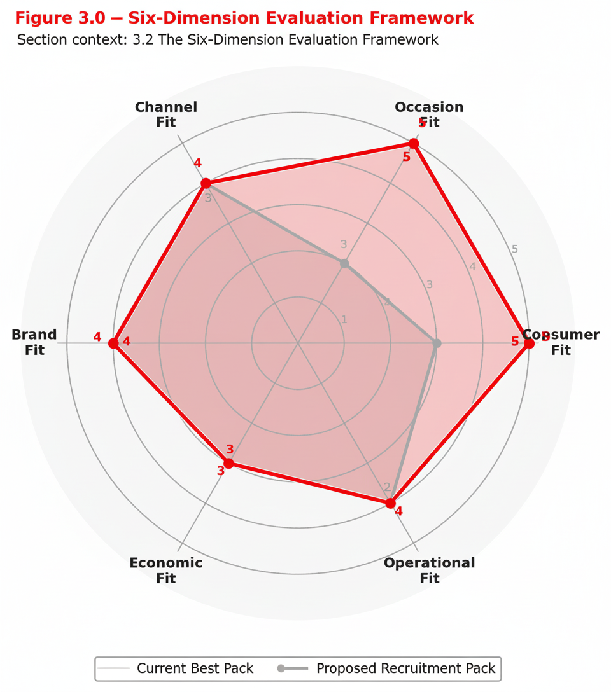

Start with the introduction, definitions, and navigation map before entering the main framework chapters.
Navigator
Contents Guide
A cleaner launchpad into the entire web edition, grouped by reading purpose and capability flow instead of synthetic chapter numbering.

Start Here
Use the site in the intended order
Chapters 1 to 8 follow the strategic and commercial workflow from diagnosis through governance and templates.
Use the training programme, question bank, and self-assessment after reading to test stage-by-stage capability.
Core Playbook
Main reading sequence
Chapter 0
Introduction
Purpose, definitions, role-based navigation, and source logic.
Chapter 1 Strategic FoundationRecruitment logic, growth engines, and strategic role in RGM.
Chapter 2 Market DiagnosisAffordability context, diagnosis flow, and go/no-go logic.
Chapter 3 Pack Design FrameworkEPP-led design, six-dimension evaluation, and business case framing.
Chapter 4 Commercialization BlueprintLaunch readiness, sell-in to sell-out loop, and execution discipline.
Chapter 5 Performance MeasurementKPI architecture, pilot-to-scale learning, and optimization logic.
Chapter 6 Case LibraryApplied examples and case references from market situations.
Chapter 7 Governance & Ways of WorkingDecision rights, stage gates, and cross-functional operating rules.
Chapter 8 Tools, Templates & AppendixReference materials, practical templates, and appendix support.
Capability Modules
Read, test, and certify
Programme
T1-T5 Training Programme
Five-stage capability journey by audience, assessment type, and certification target.
Question Bank Assessment Question BankThe full bank of questions and case material that supports the training ladder.
Interactive T1-T5 Self-AssessmentBilingual self-evaluation, scoring dashboard, and stage-by-stage readiness checks.
Figure Highlights
Fast entry into the visual logic of the playbook

Navigation Map
Role-based reading guide across chapters and capability levels.

6-Dimension Evaluation
The pack design evaluation model brought forward visually.

Pilot to Scale Loop
Optimization logic that links launch learning to governance and scaling decisions.